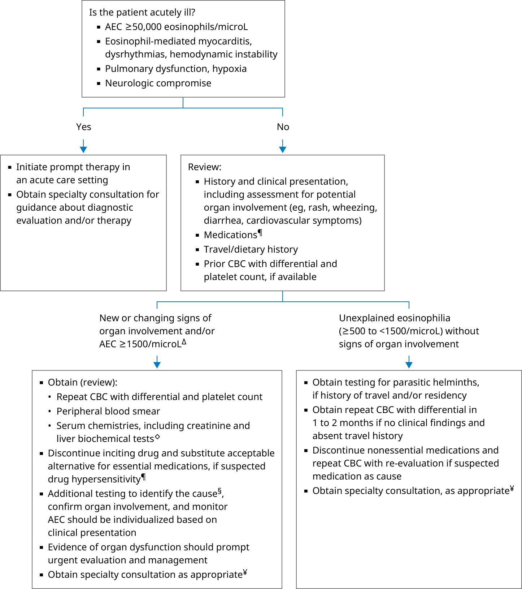

AEC: absolute eosinophil count; CBC: complete blood count.
* Typically, eosinophils represent <5% of the differential white blood cell count. A normal AEC (determined from the total white blood cell count and percentage of eosinophils) is <500 eosinophils/microL (<0.5 × 109/L).
¶ Refer to additional UpToDate table on drug reactions associated with eosinophilia.
Δ Levels of eosinophilia do not strictly correlate with eosinophil-mediated tissue damage, although organ damage is more likely with AEC ≥1500 microL (≥1.5 × 109/L).
◊ Including alanine aminotransferase (ALT) and aspartate aminotransferase (AST).
§ Refer to additional UpToDate table on the causes of eosinophilia.
¥ Consider specialty consultation if any of the following: